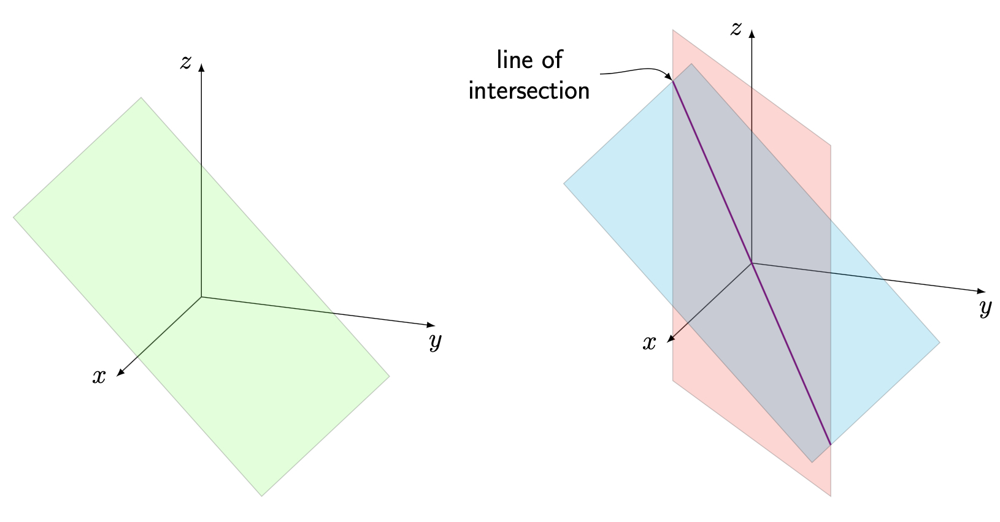

Systems of Linear Equations
What is Linear Algebra?
"Nearly every problem in linear algebra can be reduced to a system of linear equations..."
Linear algebra is the study of systems of linear equations and their corresponding solutions. Systems of linear equations have a multitude of applications in engineering, applied science, and mathematics. We will learn to approach these systems from different viewpoints, both algebraically and geometrically, to help us better understand what they represent. Before getting too deep into the main ideas of linear algebra, we will focus on three basic things:
- What is a linear equation?
- Why do we call it linear ?
- What is a solution to a system of linear equations, and how do we find said solution?
linear equation
A linear equation in variables $x_1$, $x_2$, ..., $x_n$ is any equation of the form $$\begin{equation}\tag{1.1}\label{eq:lineq} a_1x_1+a_2x_2+\cdots +a_nx_n=b, \end{equation}$$ where $a_1$, $a_2$, ..., $a_n$, and $b$ are constant real numbers.
A few comments on notation before we move forward: In the above equation, we can think of the subscript $i$ on the variable $x_i$ as a label to tell the difference between each variables. For example, we may have $3$ variables, $x_1, x_2, x_3$, and we use the subscript to tell the difference between them. Alternatively, we could just use the labels $x, y, z$ for three variables (at the end of the day, the labeling of the variables isn't that important, so long as we are consistent with our labeling!).
Also the notation $x_1$, $x_2$, ..., $x_n$ and $a_1x_1+a_2x_2+\cdots +a_nx_n$ used above is just a general way to write an expression that follows some pattern with $n$ variables, where $n$ is a positive whole number. If we choose $n=5$, then we have variables $x_1$, $x_2$, $x_3$, $x_4$, $x_5$ and then equation (\ref{eq:lineq}) would have the form $a_1x_1+a_2x_2+a_3x_3+a_4x_4+a_5x_5=b$.
Lastly, when we say that $a_1$, $a_2$, ..., $a_n$, and $b$ are constant real numbers, we mean that they are fixed and in practice do not change value, while the variables $x_1$, $x_2$, ..., $x_n$ could possibly take multiple values.
Why is it called a linear equation?
Consider a familiar equation in variables $x$ and $y$: $y=ax+b$. We call this "linear" because its graph represents a straight line, and the reason for this is because both variables appear only in the first degree in the equation. To generalize this idea to equations with more than two variables: in any linear equation, we want all variables to appear only in the first degree.
There are two linear operations that we can perform on our variables in linear algebra
- addition
- scalar multiplication
On the left-hand side of (\ref{eq:lineq}), we see that we have only scaled our variables by constant numbers, and summed the resulting quantities. We are not allowed to:
- multiply variables - no expressions like $x_1x_2$ or $x_2x_4x_n$ appear in the equation.
- take powers of our variables - no expressions like $x_1^3$ or $\sqrt{x_n}$ appear in the equation.
- take our variables as inputs of complicated functions - no expressions like $\ln(x_1)$, $e^{x_2}$ or $\cos(x_n)$ appear in the equation.
So our linear operations ensure that we only obtain expressions of our variables in the first degree.
The equation form given in (\ref{eq:lineq}) is the standard form of a linear equation, and the only requirement for the right-hand side of the equation is that it is any constant number. An equation is linear if it is equivalent to an equation of the form (\ref{eq:lineq}).
system of linear equations
A system of $m$ linear equations in variables $x_1$, $x_2$, ..., $x_n$ is any collection of linear equations of the form $$\begin{array}{cc} a_{11}x_1+a_{12}x_2+\cdots +a_{1n}x_n &=b_1\\ a_{21}x_1+a_{22}x_2+\cdots +a_{2n}x_n &=b_2\\ \vdots&\vdots\\ a_{m1}x_1+a_{m2}x_2+\cdots +a_{mn}x_n &=b_m \end{array}$$ where each coefficient $a_{ij}$ ($i=1, 2, \dots, m$; $j=1, 2, \dots, n$) and each $b_i$ ($i=1, 2, \dots, m$) is a constant real number.
We call it a system because each variable $x_i$ must take the same value in every equation.
homogenous/inhomogeneous system
We say that the linear system given in Definition 1.1.2 is a homogenous system if $b_1=b_2=\cdots=b_m=0$. Otherwise, we call it a inhomogenous system (nonhomogenous system).
Before we discuss solving these systems, let's ensure we understand what a solution to a linear system is.
solution to a system of linear equations
We say that the $n$-tuple (vector) $$\begin{bmatrix} x_1\\ x_2 \\ \vdots\\x_n \end{bmatrix}=\begin{bmatrix} s_1\\ s_2 \\ \vdots\\s_n \end{bmatrix}$$ is a solution to a system of linear equations as defined in Definition 1.1.2, if, after substituting $s_1$ for $x_1$, $s_2$ for $x_2$, ..., $s_n$ for $x_n$ into each equation, every equation in the system remains true.
A music festival has $3$ stages: one for pop/hip-hop, one for indie/alternative, and one for house/techno. The festival has a booking budget of \$$1.8$ million and the average cost per act booked is given by
- \$$96,000$ per pop/hip-hop act,
- \$$72,000$ per indie/alternative act,
- \$$54,000$ per house/techno act.
Furthermore, the expected ticket sales per act booked is given by
- $6,000$ per pop/hip-hop act,
- $2,000$ per indie/alternative act,
- $4,000$ per house/techno act.
Suppose the festival wants to book $24$ acts total, use their full budget, and expect to sell $100,000$ tickets. How can we set up a system whose solution represents the number of each type of act to book?
Solution: We introduce variables $x$, $y$, and $z$ representing number of pop/hip-hop acts, indie/alternative acts, and house/techno acts to be booked, respectively.
Since we want to book $24$ acts total, then we have
$$x+y+z=24.$$Next, since we want to use the full booking budget of $\$1.8$ million and we know the cost of booking each act in thousands of dollars, then we have
$$96x+72y+54z=1800.$$Lastly, since we want to sell 100,000 tickets and we know the expected ticket sales per type of act booked in thousands of sales, we have
$$6x+2y+4z=100.$$So the following system will have the desired solution $x$, $y$, and $z$:
\begin{align*} x+y+z & =24 \\ 96x+72y+54z & =1800 \\ 6x+2y+4z & =100 \end{align*} One can verify that $x=9$, $y=7$, $z=8$ is the unique solution to the above system. But how can we determine this solution, given the above system that we constructed?Solving Linear Systems
Matrix Systems
In high school algebra, you (should have) learned how to solve a system of, say, two equations in two variables via elimination. i.e. we multiply our equations by constants to get one variable to have the same coefficient in both equations, so that we can eliminate said variable, and isolate the other variable. For example, if we wanted to solve the system given in Example 1.1.3:
\begin{align*} 3x+2y & =4 \\ -4x-3y & =-1 \end{align*}we could multiply equation 1 by $3$ and equation 2 by $2$, and obtain
\begin{align*} 9x+6y & =12 \\ -8x-6y & =-2 \end{align*}Then adding these two equations together gives $9x-8x+6y-6y=12-2$, which eliminates $y$ and isolates $x$, and we obtain $x=10$. Then substituting $x=10$ back into any of our original equations allows us to solve for $y$. Performing this on equation 1 gives $$3\cdot10+2y=4,$$ then solving for $y$ gives $y=-13$.
Now, doing this is easy when we have a small system like this, but as we increase the number of variables or number of equations, this algorithm can get quite messy. Even solving a system of three equations in three variables in this way can be a headache.
Thankfully, we have a relatively straightforward algorithm that allows us to solve larger systems in a cleaner way. But first, we need to introduce additional notation and terminology:
augmented matrix system
The system of linear equations given in Definition 1.1.2 has the corresponding augmented matrix system $$\left[\begin{array}{cccc|c} a_{11}&a_{12}&\cdots&a_{1n}&b_1\\ a_{21}&a_{22}&\cdots&a_{2n}&b_2\\ \vdots&\vdots&\ddots&\vdots&\vdots\\ a_{m1}&a_{m2}&\cdots&a_{mn}&b_m \end{array}\right].$$ We call the matrix of coefficients $a_{ij}$ $$\begin{bmatrix} a_{11}&a_{12}&\cdots&a_{1n}\\ a_{21}&a_{22}&\cdots&a_{2n}\\ \vdots&\vdots&\ddots&\vdots\\ a_{m1}&a_{m2}&\cdots&a_{mn} \end{bmatrix}$$ the coefficient matrix of the system.
In the previous coefficient matrix, note that the $i$th row $\begin{bmatrix} a_{i1}&a_{i2}&\cdots&a_{in}\\ \end{bmatrix}$ corresponds to the coefficients of $x_1$, $x_2$, and $x_n$ respectively, in the $i$th equation of the system. On the other hand, the $j$th column $\begin{bmatrix} a_{1j}\\a_{2j}\\\vdots\\a_{m_j} \end{bmatrix}$ corresponds to the coefficients of variable $x_j$ in each equation of the system. Viewing a linear system as an augmented matrix simplifies notation significantly when solving for a solution. We also see that all that we need to maintain the structure of the system is the arrangement of constant coefficients terms.
Elementary Row Operations
Consider the following non-homogeneous linear system of three equations in three variables, and the corresponding augmented system:
We want to develop an algorithm to solve for a solution to this system, using the same operations we use to solve a system by hand via elimination, while relying on the rigid structure that a matrix maintains. We introduce the following row operations
elementary row operations
We can perform the following operations on an augmented system, and it does not change the solution to the system. We call these operations elementary row operations.
- Swap/interchange two rows ($R_i\leftrightarrow R_j$)
- Scale a row by a non-zero constant $k$ ($kR_i\to R_i$)
- Add a scalar multiple of one row to another, and replace the latter row with the result ($R_i+kR_j\to R_i$)
Since row operations do not change the solution to an augmented system, we often call two matrix systems \textit{row-equivalent} if we can obtain one from the other via elementary row-operations.
If we observe how performing these operations change the original system, we see that these operations are equivalent to the operations we use to solve a system manually via elimination.
If we perform the row operation $R_1\leftrightarrow R_2$ on the augmented system, we see it's equivalent to simply rearranging the order of the equations:
If we next perform the operation $R_2-4R_1\to R_2$ on the augmented system, we see it's equivalent to adding a multiple of equation (1) to equation (2):
If we then perform the operation $-\frac{1}{5}R_2\to R_2$ on the augmented system, we see it's equivalent to scaling equation (2) by factor $-\frac{1}{5}$:
So these elementary row operations which we perform on a system of equations are equivalent to the operations we performed on a regular linear system when we learned to solve them in high school algebra class.
We next want to introduce an algorithm that uses elementary row operations to reduce our system to one which allows us to easily determine the solution.
Gauss-Jordan Elimination (Row Reduction)
The goal of Gauss-Jordan elimination is to eliminate variables in an iterative process, to easily determine the solution for each variable. We want to apply row operations to a given augmented matrix until we obtain something of the form
$$\left[\begin{array}{ccc|c} 1&0&0&c_1\\ 0&1&0&c_2\\ 0&0&1&c_3 \end{array}\right],$$because we see that doing so isolates each variable, and immediately reveals a unique solution $x_1=c_1$, $x_2=c_2$, and $x_3=c_3$.
We will outline the process with the same system we were considering in section 1.2.2.
- We first want to obtain a $1$ in the top-left corner of the augmented system (if possible) by performing any elementary row operations. We call this $1$ a leading one (or more generally, a leading entry), because it is the first non-zero entry in its row. We see that performing the operation $R_1\leftrightarrow R_2$ to the system gives a leading one in the first row: \begin{equation}\tag{1.3} \left[\begin{array}{ccc|c} 1 & 1 & 1 & 4 \\ 4 & -1 & 1 & 13 \\ 2 & 0 & 2 & 2 \end{array}\right] \end{equation}
- Next, we want to obtain a $0$ in every row below the leading one, by adding scalar multiples of row 1 to the succeeding rows. Performing the operations $R_2-4R_1\to R_2$ and $R_3-2R_1\to R_3$ "clears below" the first leading one: \begin{equation}\tag{1.4} \left[\begin{array}{ccc|c} 1 & 1 & 1 & 4 \\ 0 & -5 & -3 & -3 \\ 0 & -2 & 0 & -6 \end{array}\right] \end{equation}
- We are done with the first row and first column for now, and we want to obtain a leading one in the second row second column entry (if possible). Performing the row operation $R_2-3R_3\to R_2$ gives the desired leading one: \begin{equation}\tag{1.5} \left[\begin{array}{ccc|c} 1 & 1 & 1 & 4 \\ 0 & 1 & -3 & 15 \\ 0 & -2 & 0 & -6 \end{array}\right] \end{equation}
- We next continue in a similar manner, and clear below the second leading one to obtain $0$'s below it. Performing the operation $R_3+2R_2\to R_3$ gives: \begin{equation}\tag{1.6} \left[\begin{array}{ccc|c} 1 & 1 & 1 & 4 \\ 0 & 1 & -3 & 15 \\ 0 & 0 & -6 & 24 \end{array}\right] \end{equation} Our matrix is now in row-echelon form (which we will define momentarily), but we continue to reduce the system to reduced row-echelon form, because it will make it easier to determine our solution.
- We obtain our last leading one in the third row third column entry by performing $-\tfrac{1}{6}R_3\to R_3$: \begin{equation}\tag{1.7} \left[\begin{array}{ccc|c} 1 & 1 & 1 & 4 \\ 0 & 1 & -3 & 15 \\ 0 & 0 & 1 & -4 \end{array}\right] \end{equation}
- Now, to obtain the reduced-row-echelon form of the system, we simply want to clear above each leading one, but this time moving right-to-left across the columns of the coefficient matrix. Performing $R_2+3R_3\to R_2$ and $R_1-R_3\to R_1$, we obtain \begin{equation}\tag{1.8} \left[\begin{array}{ccc|c} 1 & 1 & 0 & 8 \\ 0 & 1 & 0 & 3 \\ 0 & 0 & 1 & -4 \end{array}\right] \end{equation}
- Lastly, performing $R_1-R_2\to R_1$, we obtain the reduced row-echelon form of the system: \begin{equation}\tag{1.9} \left[\begin{array}{ccc|c} 1 & 0 & 0 & 5 \\ 0 & 1 & 0 & 3 \\ 0 & 0 & 1 & -4 \end{array}\right] \end{equation}
Now, this reduced augmented system translates as the following linear system:
$$\begin{array}{rrrl} 1x & +0y&+0z&=5\\ 0x &+1y&+0z&=3\\ 0x &+0y&+1z&=-4 \end{array}$$So we see that
$$\begin{bmatrix} x\\y\\z \end{bmatrix}=\begin{bmatrix} 5\\3\\-4 \end{bmatrix},$$is the (unique) solution to our system. We can verify by checking that this solution satisfies our original three equations:
$$\begin{array}{rrrlrrl} 4x & -y&+z&=4(5)&-3&+(-4)&=13\\ x &+y &+z&=5&+3&+(-4)&=4\\ 2x & &+2z&=2(5)& &+2(-4)&=2 \end{array}.$$Row-Echelon Forms
row-echelon forms
We say that a matrix is in row-echelon form (REF) if it has the following three properties:
- All non-zero rows are above all rows of zeroes in the matrix.
- The leading entry of any row is in a column to the right of the leading entry in the row above it.
- All entries in a column below a leading entry are zeros.
We say that a matrix is in reduced row-echelon form (RREF) if it is in row-echelon form, and it has the following two additional properties:
- Each leading entry is a $1$.
- Each leading entry is the only non-zero entry in its column (i.e. all entries in a column above a leading entry are also zeros).
Consider again the augmented system from Example 1.2.1 and it's corresponding $\mathrm{REF}$ and $\mathrm{RREF}$:
We saw that the $\mathrm{RREF}$ immediately gave the unique solution $\begin{bmatrix} x \\y\\z \end{bmatrix}=\begin{bmatrix} 5\\3\\-4 \end{bmatrix}$, but the $\mathrm{REF}$ is enough to find the solution via back-substitution. Consider the corresponding equations of the $\mathrm{REF}$:
$$\begin{array}{rrrl} x & +y&+z&=4\\ &y& -3z&=15\\ & &-6z&=24 \end{array}.$$We can solve the equations in reverse order, since the third equation has isolated one variable $z$, and each preceding equation has added in an additional variable.
The third equation gives $z=-4$. Then we see that in the second equation, we can solve for $y$ in terms of $z$ and we have
$$y=15+3z=15+3(-4)=3.$$Lastly, in the first equation we can solve for $x$ in terms of $y$ and $z$, since we have already determined their values:
\begin{align*} x & =4-y-z=4-3-(-4)=5 \end{align*}So the row-echelon form is the minimum form to easily find the solution via back-substitution. However, in this course, we would generally like to work with the reduced row-echelon forms to find the solution immediately.
Now, it is not difficult to see that we can apply various row operations to a matrix and obtain different row-echelon forms; however, the same is not true for reduced row-echelon forms.
Uniqueness of RREF
Every matrix is row-equivalent to a unique reduced row-echelon form matrix.
Contrary to the REF, the uniqueness of the RREF of a matrix ensures an immediate way to describe our solution explicitly. We will later find that the RREF also tells us a lot more about the structure of a matrix and its corresponding system.
But first, notice that the systems we have considered thus far only had a unique solution. This poses a very impotant question about linear systems: is it possible to obtain more than one solution, or no solution at all?
Solution Sets
Systems with Infinitely Many Solutions
Consider the following non-homogeneous linear system with corresponding augmented matrix system:
We can apply the following elementary row operations to the system to obtain the reduced row-echelon form:
Now, we see that the corresponding system does not immediately give a way to describe our variables explicitly:
\begin{equation} \begin{array}{rrrrl} x_1 & -2x_2 & & +2x_4 & =14 \\ & & x_3 & -3x_4 & =-8 \end{array} \end{equation}How can we describe our solution as a vector of numbers? We will formalize the process of describing our solution in the following way:
- The variables which correspond to columns with leading ones are called determined variables (basic variables). That is, $x_1$ and $x_3$ are determined variables. We call them determined variables because we will be determining these variables explicitly in our solution.
- The variables which do not correspond to columns with leading ones are called free variables. That is, $x_2$ and $x_4$ are free variables. We call them free variables, because we are free to choose them to be any real number.
- In the equations from our reduced system, solve for the determined variables in terms of the free variables.
Solving for $x_1$ in equation (1) and $x_3$ in equation (2) we obtain
\begin{align*} x_1 & =14+2x_2-2x_4 \\ x_3 & =-8+3x_4 \end{align*}Then since $x_2$ and $x_4$ are free variables, we are free to choose them to be any number, so we can just label these variables as themselves. Then we can represent any solution to the system in the explicit form:
$$\begin{bmatrix} x_1\\x_2\\x_3\\x_4 \end{bmatrix}=\begin{bmatrix} 14+2x_2-2x_4\\ x_2\\ -8+3x_4\\ x_4 \end{bmatrix},$$where $x_2$ and $x_4$ can be any real number.
Since the system has two free variables, we see that we have infinitely many solutions. For example, choosing $x_2=0$ and $x_4=0$ or instead choosing $x_2=1$ and $x_4=-1$ gives two particular solutions to the system
$$\begin{bmatrix} x_1\\x_2\\x_3\\x_4 \end{bmatrix}=\begin{bmatrix} 14\\ 0\\ -8\\ 0 \end{bmatrix}, \quad \begin{bmatrix} x_1\\x_2\\x_3\\x_4 \end{bmatrix}=\begin{bmatrix} 18\\ 1\\ -11\\ -1 \end{bmatrix}.$$When we have infinitely many solutions to a system it is often useful to describe all solutions by a solution set. A set of mathematical objects as simply a collection of objects. We can describe the solution set $S$ to the system in the following way:
$$S=\left\{\begin{bmatrix} 14+2x_2-2x_4\\ x_2\\ -8+3x_4\\ x_4 \end{bmatrix}\ \Bigg|\ x_2, x_4\in\mathbb{R} \right\}.$$The set notation above can be read in the following way: "$S$ is the set of all vectors of the form $\begin{bmatrix} 14+2x_2-2x_4\\ x_2\\ -8+3x_4\\ x_4 \end{bmatrix}$ such that $x_2$ and $x_4$ are real numbers".
Typically, the item on the left-hand side of the middle bar gives a basic description for the elements of the set (i.e. all elements in the solution set are vectors of the described form). Then the descriptions on the right-hand side of the bar give additional requirements for the elements of the set (i.e. the only requirement of these vectors is that our choice of $x_2$ and $x_4$ are real numbers).
Parameterizing solution variables
For notational and aesthetic (and possibly functional) purposes, a common practice is to parameterize the free variables in a system, which essentially means to "relabel" the free variables. In the previous example, we only have two free variables, namely, $x_2$ and $x_4$, but maybe it doesn't make sense to have these labels, as they appear a bit arbitrary in the final solution.
A common practice is to relabel the free variables as new variables parameters. We often use variables such as $r,s,t$ to do this. So in the previous example, by letting $x_2=r$ and $x_4=s$, where $r$ and $s$ are assumed to be any real numbers, the solution to the system is given by all vectors of the form
$$\begin{bmatrix} x_1\\x_2\\x_3\\x_4 \end{bmatrix}=\begin{bmatrix} 14+2r-2s\\ r\\ -8+3s\\ s \end{bmatrix}.$$Systems with No Solution
So now we know how to determine a solution if a system has a unique solution or infinitely many solutions, but how do we know if a system has no solution?
Consider the following linear system with corresponding matrix system
After applying the following row operations in order to the augmented matrix $R_2+R_1\to R_2$, $R_3-3R_1\to R_3$, $R_3+3R_2\to R_3$, we obtain the following row-echelon form of the system:
\begin{equation} \left[\begin{array}{ccc|c} 1 & -4 & -2 & 3 \\ 0 & -3 & -3 & 4 \\ 0 & 0 & 0 & 5 \end{array}\right] \end{equation}Now, in this reduced system the last equation reads as
$$0x_1+0x_2+0x_3=5,$$so we would only have a solution to this system if $0=5$. But since $0\neq 5$, then it must be that we have no solution. So, when trying to reduce a system to find a solution, if we ever obtain a contradiction in our system, such as $0=c$, where $c\neq 0$, then we can immediately conclude that a system has no solution.
consistent/inconsistent system
If a linear system has no solution, we say that it is an inconsistent system. Otherwise, if there exists at least one solution to the system, we say that it is a consistent system.
The results from the various systems that we have solved may have you asking the following question: if a system has more than one solution, must it have infinitely many? The following theorem answers that question:
Number of solutions to a non-homogeneous linear system
Any non-homogeneous system of linear equations has either zero, one, or infinitely many solutions. There are no other possibilities.
The proof of this theorem will be provided once we have a better understanding of the structure of linear systems.
Now, in the case of a homogeneous system, we have the following result:
Number of solutions to a homogeneous linear system
Any homogeneous system of linear equations has either one or infinitely many solutions. There are no other possibilities.
To understand why this is true, try to think about why the zero vector $\vec{0}=\begin{bmatrix} 0\\0\\\vdots\\0 \end{bmatrix}$ is always a solution to any homogeneous system.
Geometric Interpretation of Solution Sets
Now we have a decent understanding of how to interpret our solutions algebraically as vectors, but what do these solutions (or lack of solutions) look like geometrically? To start, let's consider systems in two variables.
System with no solutionThe following system
\begin{equation} \begin{array}{rrl} 2x & -y & =1 \\ -4x & +2y & =2 \end{array} \end{equation}has no solution. If $\begin{bmatrix} x\\y \end{bmatrix}$ was a solution, then we could interpret it as a point which lies on both the line represented by $2x-y=1$ and the line $-4x+2y=2$. However, we see that after solving for $y$ we obtain the lines $y=2x-1$ and $y=2x+1$. Then graphing these lines, gives
So the two lines defined by the system are parallel (since they both have slope $\frac{1}{2}$) but not equal (since they have different $y$-intercepts). Therefore, the two lines will never intersect, and so there is no point which lies on both lines. Hence, the system has no solution.
System with infinitely many solutionsNow consider the following system:
\begin{equation} \begin{array}{rrl} 3x & -3y & =6 \\ -4x & +4y & =-8 \end{array} \end{equation}which has infinitely many solutions given by $\begin{bmatrix} x\\y \end{bmatrix}=\begin{bmatrix} 2+t\\t \end{bmatrix}$, $t\in\mathbb{R}$. Now, note that both equations in the system represent the line $y=x-2$:
So the two lines represented by $3x-3y=6$ and $-4x+4y=-8$ are in fact the same line, and so they have infinitely many intersection points, and hence, the system has infinitely many solutions.
System with one solutionLastly, consider the following system:
\begin{equation} \begin{array}{rrl} x & -2y & =-2 \\ -2x & +y & =1 \end{array} \end{equation}which has a unique solution given by $\begin{bmatrix} x\\y \end{bmatrix}=\begin{bmatrix} 0\\1 \end{bmatrix}$. Note that the lines represented by $x-2y=-2$ and $-2x+y=1$ are given explicitly by $y=\frac{1}{2}x+1$ and $y=2x+1$ respectively:
We see that the two lines determined by the system intersect at exactly one point, $\begin{bmatrix} 0\\1 \end{bmatrix}$ which is precisely our unique solution to the system.
Geometric interpretation of Solution sets for systems in 3 variablesWhen working with three variables, we can represent points in three-dimensional space corresponding to the $x$, $y$, and $z$ axis. We plot a point $\begin{bmatrix}x_0\\y_0\\z_0\end{bmatrix}$ in 3-space similar to how we plot a point $\begin{bmatrix}x_0\\y_0\end{bmatrix}$ on the plane—by moving the specified number of units along each axis:
A linear equation in three variables represents a (flat) plane in 3D space.
The $xy$-plane represents all points of the form $\begin{bmatrix}x\\y\\0\end{bmatrix}$, which have a $z$ coordinate of $0$.
A system in three variables with no solution is either one in which two (or more) of the equations represent parallel planes which never intersect, or one in which all of the planes in the system do not intersect at a singular point.
In the latter example, we see that the the cyan and red planes intersect at violet line, the cyan and yellow planes intersect at the green line, and red and yellow planes intersect at the orange line. But the 3 planes together never intersect in one place. We can additionally see this from the fact that the intersection of each pair of planes form 3 different vertical, parallel lines.
The solution to a system in three variables with infinitely many solutions can either represent a single plane (two free variables) or a line in which two (or more) different planes intersect (one free variable):
The solution to a system in three variables with one unique solution (no free variables) represents the unique point in which three (or more) different planes intersect.
Do not worry too much about being able to draw these geometric interpretations of a solution in three dimensions, but understand what these different types of solutions represent, and particularly how the number of free variables in a system tells us about the geometric interpretation of the solution.